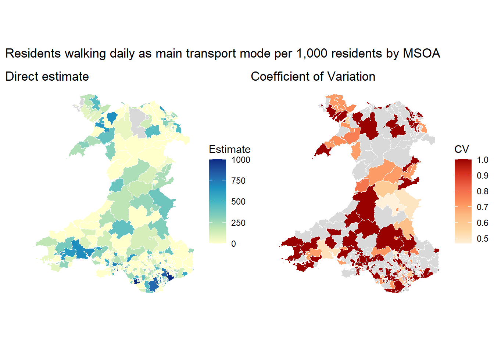
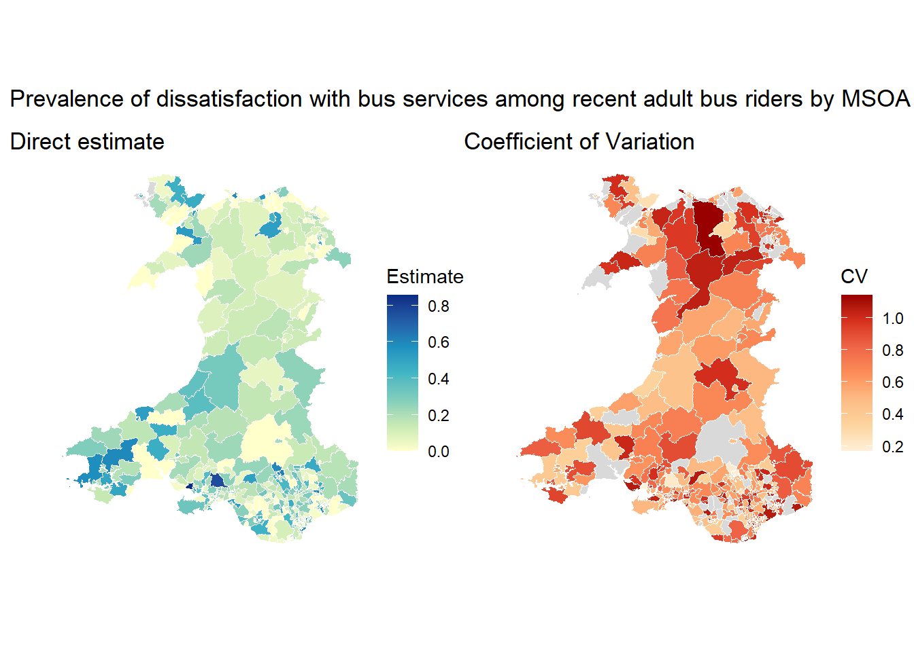

# Load libraries
library(dplyr)
library(readr)
library(stringr)
library(tidyr)
library(sf)
library(ggplot2)
library(patchwork)
# Load analysis-ready data into a temp folder
zip_tmp <- tempfile(fileext = ".zip")
url <- "https://raw.githubusercontent.com/shaunhoang/tutorial-site/main/data/tutorial-clean-data.zip"
download.file(url, zip_tmp, mode = "wb")
unzip(zip_tmp, exdir = tempdir())
base_path <- file.path(tempdir(), "clean")
# Load shapefiles for plotting
boundary_zip <- tempfile(fileext = ".zip")
boundary_url <- "https://raw.githubusercontent.com/shaunhoang/tutorial-site/main/data/tutorial-boundaries.zip"
download.file(boundary_url, boundary_zip, mode = "wb")
unzip(boundary_zip, exdir = tempdir())
msoa_boundaries <- st_read(
file.path(tempdir(), "boundaries", "boundaries-msoa.geojson"),
quiet = TRUE
) |>
rename(domain_id = MSOA21CD) |>
filter(str_starts(domain_id, "W"))
# List of all MSOAs for summary
msoa_domains <- msoa_boundaries |>
st_drop_geometry() |>
select(domain_id)Direct Estimation
Direct estimation is the process of deriving a preliminary estimate at the desired estimation geography, based solely on the survey data. The direct estimates and their variances are also components in model-based area-level estimation in the next workbook.
1 Direct Estimator and Sampling Variances
The estimator should match the information available in the survey file and the estimand definition.
| Scenario | Estimator | Formula | When to use |
|---|---|---|---|
| Known domain sizes; has grossing weights | Horvitz-Thompson estimator | \(\hat{\theta}_d^{DIR}=\frac{\sum_{i\in s_d}w^G_{di}y_{di}}{N_d}\) | Anchors estimates to the true population size of each estimation area; required for counts/totals and useful for population rates, but equally valid for means or proportions |
| Unknown domain sizes; has survey weights | Hájek estimator | \(\hat{\theta}_d^{DIR}=\frac{\sum_{i \in s_d}w_{di}^Ay_{di}}{\sum_{i \in s_d}w^A_{di}}\) | Can only be used for estimating means or proportions when only using analysis weights and no reliable area population size is available |
| Unknown domain sizes; no survey weights | Unweight sample mean | \(\hat{\theta}_d^{DIR}=\frac{\sum_{i \in s_d}y_{di}}{n_d}\) | The simplest form of direct estimator, likely biased if survey sampling is not random, and imprecise when \(n_d\) is too low |
Here, the direct estimate \(\hat{\theta}_d^{DIR}\) is for area \(d\) with sample size \(n_d\) and domain size \(N_d\) if known.
Direct estimates are paired with sampling variances, telling us how much uncertainty comes from observing only a sample within each estimation area. The variance depends not only on the estimator, but also the weight scale, and survey design information available.
2 Evaluate direct estimates
Use the direct estimates and sampling variances to decide whether direct reporting is enough, or whether model-based SAE is needed.
| Scenario | Next step |
|---|---|
| Too many areas have no/few samples, variances are missing or unreasonably large | Revisit the estimand definition (target population, estimation geography) |
| All areas have direct estimates with acceptable sample sizes, and uncertainty | Direct estimates may be enough for reporting. |
| Most areas have direct estimates, albeit imprecise. Spatial effects matter. | Fit a Area-Level Estimation Model model to borrow strength from covariates and neighbouring areas. |
3 Pratical: Code Implementation
Tip
Use survey::svyby() for flexible calculation of direct estimates using any estimator and input survey design elements such as strata.
3.1 Setup
We will first focus on producing and evaluating the estimates using the indicator freq_walker before replicating the process for bus_nosat and commute_distance.
3.2 Frequent walkers per 1,000 residents by MSOA
3.2.1 Direct Estimation
Keep in mind that with freq_walker, we are estimating:
Rate per 1,000 residents walking as main transport mode daily across MSOAs
freq_walker is a binary survey indicator for whether a respondent walks for transport daily. Our estimand is a rate estimand (per 1k), so we need the HT direct estimator approach. More specifically, the estimate is equal to a population-weighted total of frequent walkers per MSOA, divided by total population in each MSOA. The ratio is then multiplied by 1000 to represent rate per 1k.
To achieve the weighted total in the numerator, we multiple the binary indicator with its companion grossing weight. For domain sizes in the denominator, i.e., total population per MSOA, we can simply sum the grossing weight within each MSOA.
Warning
This shortcut is only appropriate because WalesTravelWeight was explicitly scaled using the MSOA domain sizes in the previous workbook. In practice, some surveys provide grossing weights directly, and these may not sum to the target denominator needed for a specific small-area estimand. In that case, use the actual domain sizes as the denominator instead.
# Load the active-travel indicator with its grossing weight
survey_indicator_walk <- read_csv(
file.path(base_path, "ind_weight_freq_walker.csv"),
show_col_types = FALSE
) |>
filter(
!is.na(indicator),
!is.na(weight),
!is.na(domain_id),
!is.na(strata)
) |>
group_by(domain_id) |>
mutate(grossed_domain_size = sum(weight, na.rm = TRUE)) |>
ungroup()
# Set up the survey design
design_walk <- survey::svydesign(
ids = ~1,
strata = ~strata,
weights = ~weight,
data = survey_indicator_walk
)
# Estimate the weighted total in each MSOA
walk_total <- survey::svyby(
formula = ~indicator,
by = ~domain_id + grossed_domain_size,
design = design_walk,
FUN = survey::svytotal,
vartype = "se",
na.rm = TRUE
) |>
as.data.frame() |>
tibble::as_tibble()
# Divide by the grossed MSOA denominator and keep the uncertainty on the same scale
dir_est_walk <- walk_total |>
transmute(
domain_id,
direct = (indicator / grossed_domain_size) * 1000,
variance = ((se / grossed_domain_size) * 1000)^2,
cv = if_else(direct == 0, NA_real_, abs(sqrt(variance) / direct)),
ci_width = 2 * 1.96 * sqrt(variance)
)
head(dir_est_walk)# A tibble: 6 × 5
domain_id direct variance cv ci_width
<chr> <dbl> <dbl> <dbl> <dbl>
1 W02000030 0 0 NA 0
2 W02000081 0 0 NA 0
3 W02000351 0 0 NA 0
4 W02000186 0 0 NA 0
5 W02000194 0 0 NA 0
6 W02000024 0 0 NA 0Alongside the direct estimate (direct) and its sampling variance (variance), the output above also produces
cvfor the coefficient of variation calculated as the standard error divided by the estimate. Values >1 indicate that the typical SE is larger than the estimate.ci_widthfor the approximate width of the 95% confidence interval (expressed in the original units).
3.2.2 Evaluation
Direct estimation itself is prone to be insufficient. To assess the quality of the direct estimates,
- First check whether any estimation areas lack a direct estimate. In some cases, they might have a direct estimate but no useful variance, especially when
n = 1. - Next, assess whether the available direct estimates are precise enough to report by looking at metrics such as
median_cvandmedian_ci_width.
# Plot estimate and CV
walk_map_data <- msoa_boundaries |>
left_join(dir_est_walk, by = "domain_id")
walk_estimate_map <- ggplot(walk_map_data) +
geom_sf(aes(fill = direct), colour = "white", linewidth = 0.25) +
scale_fill_distiller(palette = "YlGnBu", direction = 1, na.value = "grey85") +
labs(
fill = "Estimate",
title = "Direct estimate"
) +
theme_void()
walk_cv_map <- ggplot(walk_map_data) +
geom_sf(aes(fill = cv), colour = "white", linewidth = 0.25) +
scale_fill_distiller(palette = "OrRd", direction = 1, na.value = "grey85") +
labs(
fill = "CV",
title = "Coefficient of Variation"
) +
theme_void()
walk_estimate_map + walk_cv_map +
plot_annotation(
title = "Residents walking daily as main transport mode per 1,000 residents by MSOA"
)
# Uncertainty diagnostics summary
walk_sample_n <- survey_indicator_walk |>
count(domain_id, name = "n")
msoa_domains |>
left_join(walk_sample_n, by = "domain_id") |>
left_join(dir_est_walk, by = "domain_id") |>
mutate(n = replace_na(n, 0)) |>
summarise(
areas_total = n(),
areas_n_0 = sum(n == 0),
areas_n_lt2 = sum(n < 2),
median_sample_size = median(n, na.rm = TRUE),
median_cv = median(cv, na.rm = TRUE),
median_ci_width = median(ci_width, na.rm = TRUE)
) |>
pivot_longer(
cols = everything(),
names_to = "diagnostic",
values_to = "value"
)# A tibble: 6 × 2
diagnostic value
<chr> <dbl>
1 areas_total 408
2 areas_n_0 5
3 areas_n_lt2 30
4 median_sample_size 5
5 median_cv 1.000
6 median_ci_width 260. 3.3 Mean commute distance among commuters by MSOA
3.3.1 Direct Estimation
The indicator commute_distance is continuous, so the direct estimate is simply the weighted mean commute distance among available commuter respondents (Hajek estimator).
# Load the indicator and weight
survey_indicator_commute <- read_csv(
file.path(base_path, "ind_weight_commute_distance.csv"),
show_col_types = FALSE
) |>
filter(
!is.na(indicator),
!is.na(weight),
!is.na(domain_id),
!is.na(strata)
)
# Set up the survey design
design_commute <- survey::svydesign(
ids = ~1,
strata = ~strata,
weights = ~weight,
data = survey_indicator_commute
)
# Estimate the weighted mean in each MSOA
commute_mean <- survey::svyby(
formula = ~indicator,
by = ~domain_id,
design = design_commute,
FUN = survey::svymean,
vartype = "se",
na.rm = TRUE
) |>
as.data.frame() |>
tibble::as_tibble()
# Output with uncertainty measures
dir_est_commute <- commute_mean |>
transmute(
domain_id,
direct = indicator,
variance = se^2,
cv = if_else(direct == 0, NA_real_, abs(sqrt(variance) / direct)),
ci_width = 2 * 1.96 * sqrt(variance)
)
head(dir_est_commute)# A tibble: 6 × 5
domain_id direct variance cv ci_width
<chr> <dbl> <dbl> <dbl> <dbl>
1 W02000001 9.70 6.77 0.268 10.2
2 W02000002 11.2 1.84 0.121 5.31
3 W02000003 10.6 7.56 0.258 10.8
4 W02000005 25.3 101. 0.396 39.4
5 W02000006 35.1 528. 0.654 90.1
6 W02000007 9.91 4.70 0.219 8.493.3.2 Evaluation

# A tibble: 6 × 2
diagnostic value
<chr> <dbl>
1 areas_total 408
2 areas_n_0 1
3 areas_n_lt2 2
4 median_sample_size 8.5
5 median_cv 0.318
6 median_ci_width 11.9 3.4 Dissatisfied bus users among recent adult bus riders by MSOA
3.4.1 Direct Estimation
The indicator bus_nosat is binary. It is defined only among adults who rode a bus in the last 12 months: 1 means dissatisfied, 0 means not dissatisfied, and non-riders are left as nulls. The direct estimate is the weighted proportion among available recent bus riders (Hajek estimator).
# Load the indicator and weight
survey_indicator_bus <- read_csv(
file.path(base_path, "ind_weight_bus_nosat.csv"),
show_col_types = FALSE
) |>
filter(
!is.na(indicator),
!is.na(weight),
!is.na(domain_id),
!is.na(strata)
)
# Set up the survey design
design_bus <- survey::svydesign(
ids = ~1,
strata = ~strata,
weights = ~weight,
data = survey_indicator_bus
)
# Estimate the weighted share in each MSOA
bus_mean <- survey::svyby(
formula = ~indicator,
by = ~domain_id,
design = design_bus,
FUN = survey::svymean, # when paired with binary indicator, it represents share
vartype = "se",
na.rm = TRUE
) |>
as.data.frame() |>
tibble::as_tibble()
# Output with uncertainty measures
dir_est_bus <- bus_mean |>
transmute(
domain_id,
direct = indicator,
variance = se^2,
cv = if_else(direct == 0, NA_real_, abs(sqrt(variance) / direct)),
ci_width = 2 * 1.96 * sqrt(variance)
)
head(dir_est_bus)# A tibble: 6 × 5
domain_id direct variance cv ci_width
<chr> <dbl> <dbl> <dbl> <dbl>
1 W02000001 0.0462 0.00210 0.992 0.180
2 W02000002 0.449 0.0426 0.459 0.809
3 W02000003 0.385 0.0142 0.310 0.468
4 W02000005 0.470 0.0158 0.268 0.493
5 W02000006 0.111 0.0109 0.942 0.409
6 W02000007 0.214 0.0210 0.678 0.5693.4.2 Evaluation

# A tibble: 6 × 2
diagnostic value
<chr> <dbl>
1 areas_total 408
2 areas_n_0 1
3 areas_n_lt2 1
4 median_sample_size 10
5 median_cv 0.675
6 median_ci_width 0.4283.5 Final thoughts
Even though direct estimation does not involve modelling, it is where we stress-test the raw data. It shows how much survey evidence we actually have in each area, how uncertain the estimates are, and whether the direct estimates and sampling variances are robust enough to feed into the modelled-estimation step in the next workbook.
The direct estimate calculation should follow the measure and the estimand:
freq_walkeris a population rate per 1,000 residents, so the estimate is the weighted total divided by the MSOA population, times 1,000.commute_distanceis a mean distance among commuter respondents.bus_nosatis a share among adults who rode a bus in the last 12 months.
The uncertainty diagnostics above show different levels of uncertainty across the three examples.
freq_walkeris the most fragile, due to being derived from a subsampled survey question: 5 MSOAs have no data, 30 have fewer than 2 obs, and the median CV is around 1 (high). This is an example of an indicator that is likely to benefit the most from model-based estimation.commute_distancelooks more stable, with only 1 area with no data, 2 areas with fewer than two observations, a median sample size of 8.5, and a CI width of 11 (miles).bus_nosathas reasonable area coverage, but the median CV and CI width are still high, reflecting the smaller eligible group of recent bus riders rendering the direct estimates imprecise.
Model-based estimation in the next steps can then improve the estimates by reducing uncertainty and producing statistically informed estimates for areas with little or no survey data by borrowing power from the covariates and spatial structure.